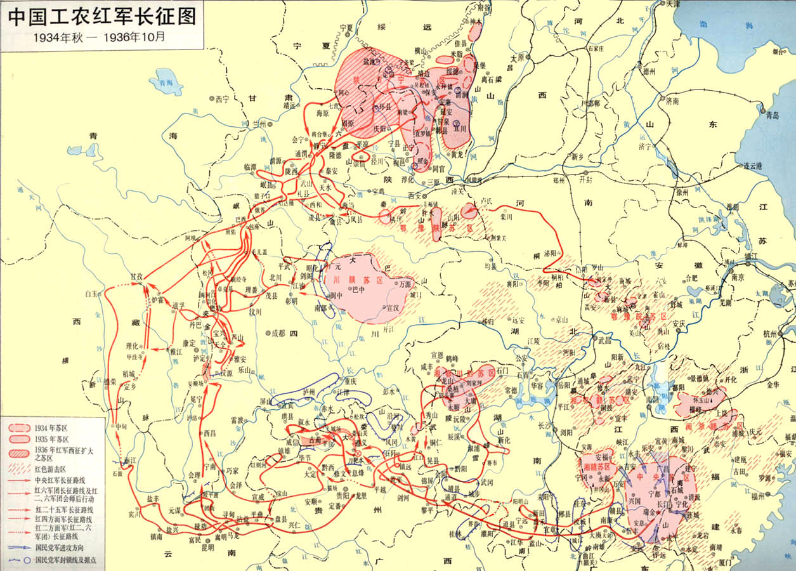

地图上的伟大远征
1934年10月，中央红军8.6万余人从江西于都河畔星夜出发；1936年10月，红一、二、四方面军在甘肃会宁、将台堡胜利会师。两年时间，中国工农红军以血肉之躯走完了这条改变中国命运的万里长路——它不只是一次军事转移，更是一部用双脚丈量信仰的史诗、一座中华民族百折不挠的精神丰碑。

1934.10—1936.10
约半个中国
中央红军二万五千里
近百条江河、20余座雪山
红一·红二·红四方面军
平均年龄不到30岁
重走长征路
红星随行军进度点亮 · 点击节点查看历史现场
中央红军
于都出发 → 遵义 → 四渡赤水 → 金沙江 → 夹金山 → 腊子口 → 吴起镇
贺龙·任弼时
湘鄂川黔 → 转战湘黔滇 → 甘孜 → 将台堡会师
徐向前
川陕苏区 → 强渡嘉陵江 → 北上南下曲折 → 会宁会师
行军大事记
- 1934.10
中央红军8.6万余人从于都河畔星夜出发，踏上战略转移之路，于都百姓拆门板搭浮桥送行
- 1934.11
湘江战役血战七昼夜，中央红军由8.6万锐减至3万余人，江水赤红
- 1935.01
遵义会议召开，确立毛泽东在党中央和红军的领导地位，生死攸关的转折点
- 1935.01-03
四渡赤水，声东击西、忽南忽北，3万红军跳出40万敌军重围，军史誉为"得意之笔"
- 1935.05
巧渡金沙江7天7夜未损一兵，飞夺泸定桥22勇士冒死攀铁索夺桥
- 1935.06
翻越海拔4000米夹金山，中央红军与红四方面军在懋功胜利会师
- 1935.08
穿越松潘水草地，风雨浸衣、野菜充饥，无数年轻生命长眠于此
- 1935.09
突破天险腊子口，小战士攀绝壁奇袭，打开北上最后一道险关，翻越岷山
- 1935.10
中央红军到达陕北吴起镇，历时368天行程二万五千里，《七律·长征》写就
- 1936.10
红一、红四方面军会宁会师；10月22日红一、红二方面军将台堡会师，长征胜利结束
长征之最
湘江血战，折损过半，三年不饮湘江水
四渡赤水，3万牵40万鼻子走，得意之笔
雪山草地，单衣御寒，野菜皮带充饥
遵义会议，拨正航向，从挫折走向胜利
三军会师，万里聚首，宣告长征胜利
一首诗 · 一路山河
红军不怕远征难，万水千山只等闲。
五岭逶迤腾细浪，乌蒙磅礴走泥丸。
金沙水拍云崖暖，大渡桥横铁索寒。
更喜岷山千里雪，三军过后尽开颜。
这首诗写于中央红军即将到达陕北之际。五十六个字，是一条河一座山的实录，更是一支队伍的精神注脚。
长征精神 · 时代回响
坚定信念
把全国人民和中华民族的根本利益看得高于一切，坚信正义事业必然胜利。
不怕牺牲
为了救国救民，不怕任何艰难险阻，不惜付出一切牺牲。
独立自主
坚持实事求是，一切从实际出发，独立自主走自己的路。
顾全大局
严守纪律、紧密团结，把千难万险凝聚成无坚不摧的力量。
依靠人民
同人民群众生死相依、患难与共、艰苦奋斗。
对今天意味着什么
新时代的“雪山草地”
从脱贫攻坚到科技自立自强，每一场攻坚战都需要长征那样一往无前的意志。
实事求是的“遵义启示”
勇于修正错误、敢于历史转折，是改革开放与中国道路的精神底色。
人民至上的“鱼水深情”
从“半条被子”到“以人民为中心”，同人民风雨同舟是永远的胜利密码。
伟大长征精神，是中国共产党人红色基因和精神族谱的重要组成部分，已经深深融入中华民族的血脉和灵魂。
九十年 · 为什么纪念
2026年10月22日 · 红军长征胜利90周年
一次理想信念的伟大远征
长征检验了真理、唤醒了民众、开创了新局。九十年后，它依然是回答“从哪里来、到哪里去”的精神原点。
一座贯通历史的精神坐标
从雪山草地到强国建设，长征精神代代传承，为民族复兴注入不竭的精神伟力。
一场永不完结的新长征
纪念，是为了再出发。强国建设、民族复兴，就是我们这一代人的长征路。
每一代人有每一代人的长征路，每一代人都要走好自己的长征路。
人物志 · 走在路上的人
这是一支年轻的队伍：指挥员平均年龄不过二十几岁，许多人牺牲时不到20岁。
※ 开国十大元帅中，有九位走过长征路。
影像志 · 山河旧影
八幅画卷，重走那条改变中国命运的路。